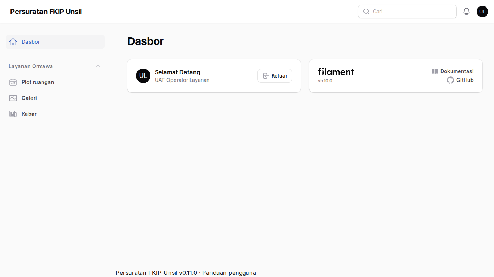
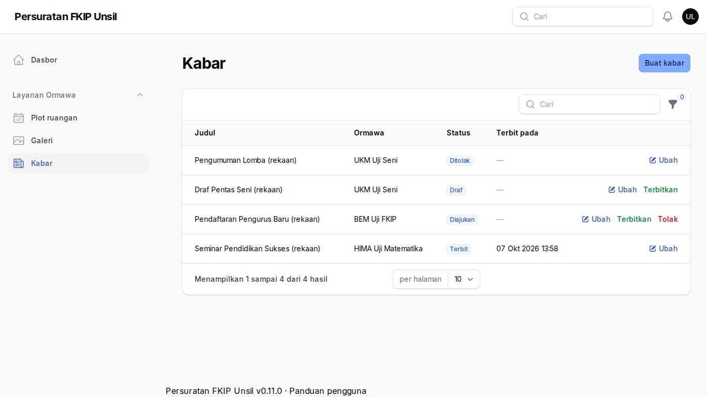
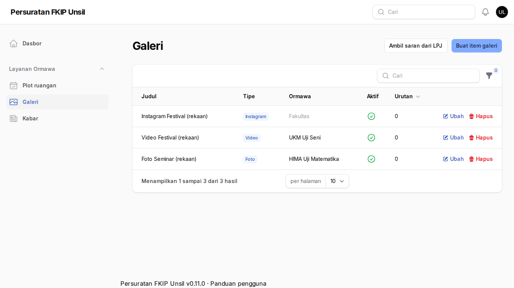
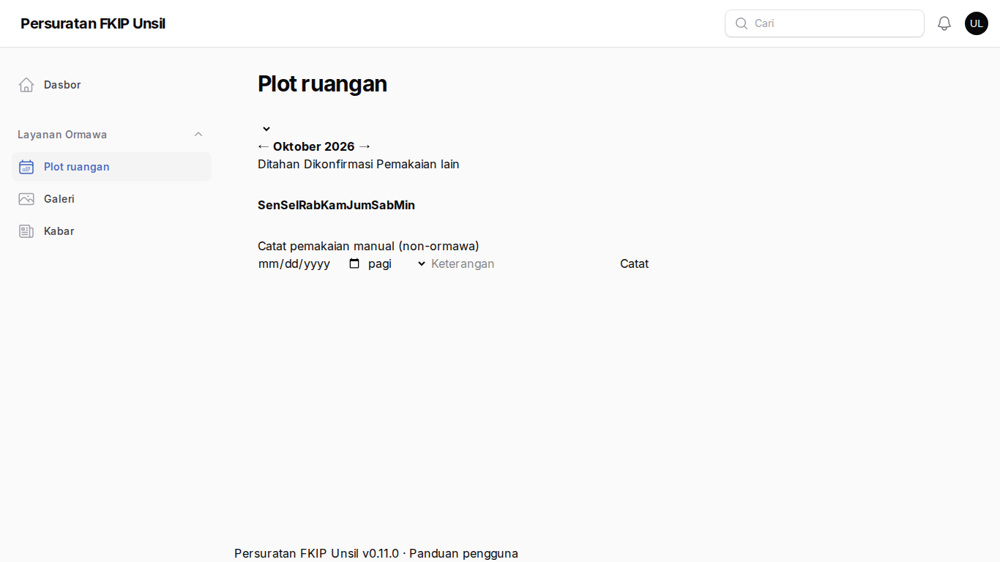

Operator layanan
Tujuan
Mengelola bagian tertentu yang diizinkan admin (mis. kabar, galeri, dan jadwal ruangan) tanpa akses penuh.
Cara masuk
Akun dibuat super-admin dengan izin granular per modul. Menu panel hanya memuat modul yang diizinkan.
Langkah-langkah
- Dasbor terbatas
Hanya menu sesuai izin Anda yang tampil.
Langkah 1 — Dasbor terbatas - Kabar
Terbitkan atau tolak kabar usulan ormawa (bila diberi izin kabar).
Langkah 2 — Kabar - Galeri
Tambah foto/video/Instagram dan aktifkan; Ambil saran dari LPJ menyalin tautan media LPJ sebagai item nonaktif.
Langkah 3 — Galeri - Plot ruangan
Catat pemakaian ruangan manual (bila diberi izin jadwal ruangan).
Langkah 4 — Plot ruangan
Tanya jawab
Menu yang saya perlukan tidak ada.
Minta super-admin menambahkan izin yang sesuai pada akun Anda.